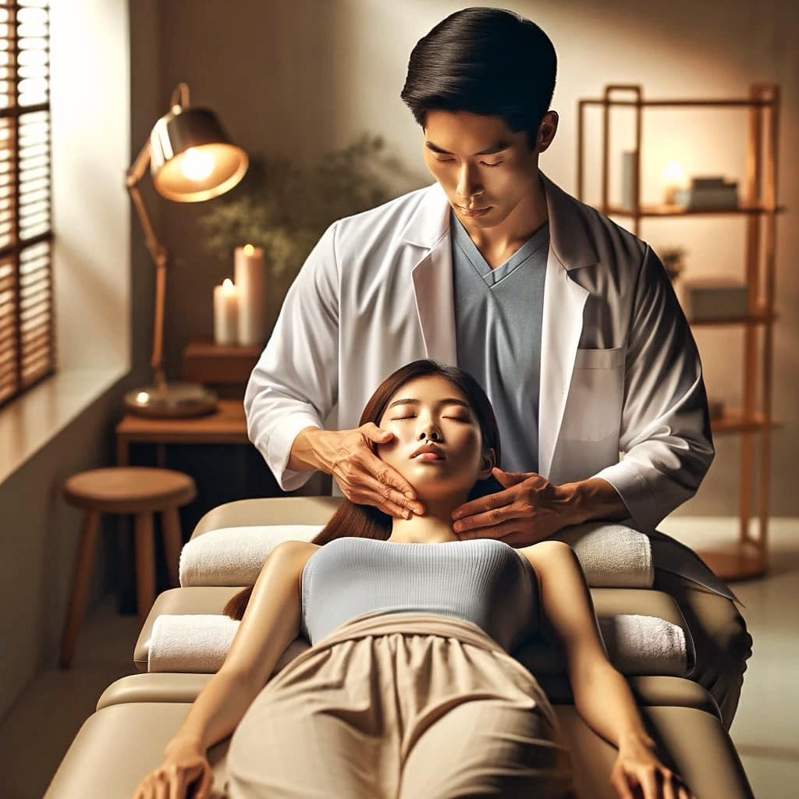

#大小臉可以透過徒手手法調整？？
#大小臉可以透過徒手手法調整？？
雖然仍具爭議，但就目前臨床操作來看確實可行。
而顱骨的徒手操作，除了可直接改善大小臉的狀況，也對失眠、肩頸僵硬和鼻部疾患有著顯著的治療效果。
在科學領域的討論中，國際文獻領域對於顱骨調整手法（Osteopathic manipulative medicine ,OMM)雖沒有絕對的認同，卻也在這幾年逐漸累積了一定的實證依據。
眾所皆知，枕骨和蝶骨之間的軟骨聯合，自11-13 歲開始骨化後，到青春期末期就會達到完全骨化。
因此，很多學者認為，當骨化完成後，顱骨就成為不動關節的代表，終身無法被調整。
話雖如此，就近代研究發現，初級呼吸和顱骨的節律運動，導致硬膜、顱骨和骶骨間的特定關係變化，也顯示出顱骨結構似乎存在固有運動，也提供了顱骨具有一般運動能力的證據。
而這種節律狀態，代表著構成結構的組織和液體之間的相互作用，是可被用來調整和復位，當然也可能導致某種症狀的產生。
⁉️⁉️那麽，大小臉又是如何形成的呢？？
頭顱骨是人體重要的結構之一，負責保護大腦與支撐顏面。
與其鄰近的頸椎、肩膀相連著許多重要的大肌群（如：提肩胛肌、斜方肌、胸鎖乳突肌....等），由於日常不良姿勢與不當的生物力學拉扯，導致肩頸與顏面肌群的張力分布不均，逐漸造成頭顱結構的歪斜，而產生許多意想不到的結果。
試想，多年只靠同側咀嚼、側睡、斜頸，是不是讓我們的臉逐漸失衡？產生改變？
因此出現大小臉、呼吸障礙、失眠、顳顎關節障礙、肩頸緊繃、頭痛.....等症狀？！？！
🗣️🗣️🗣️時常有患者問到～～～
「醫師，我覺得我的臉是歪的，尤其拍照的時候特別明顯，所以我都只敢拍左臉，這個有辦法處理嗎？」
「醫師，我嘴巴打開的時候會有卡卡聲，有時候會很痛，甚至偏頭痛到需服用止痛，這要怎麼辦呢？」
「醫師，我有慢性鼻塞，西醫說是鼻過敏，但我一直覺得鼻腔有一邊呼吸不順暢，覺得被揪住、很緊的感覺，這要吃藥嗎？」
這些長久、慢性的難解問題，都可能與我們「頭顱骨的排列」有著極大關係！
🔆在一項2018年的系統性回顧中，證實了顱骨徒手療法可有效改善頭痛，因為它透過對顱骨和相關結締組織進行調整，改變了顱骨縫線的張力。
🔆而再提到女性朋友最在乎的顏面美容，以現今主流的醫美注射方式，也很難改變大小臉和面部結構問題。
然而，透過徒手技巧與呼吸規律的搭配，卻能輕鬆、無痛和短時間內恢復頭顱骨的正常排列，找回勻稱面容。
後續，會再慢慢整理類似文獻供大家參考。
建議有上述相關症狀的朋友，可找時間與專業醫療人員討論與評估喔！！
祝大家都能有一個健康完美的頭顱唷💀💀💀
太初專人諮詢⬇️
https://lin.ee/jrVoSeM
太初中醫診所
中醫師 黃彥鈞
中醫師 薛博文
中醫安心講堂 褚衍強中醫師
中醫師 鄒知秀 Dr.Emma
—
參考文獻：
1. Whalen, J.; Yao, S.; Leder, A. A Short Review of the Treatment of Headaches Using Osteopathic Manipulative Treatment. Curr. Pain Headache Rep. 2018, 22, 82.
2. Bordoni, B.; Zanier, E. Sutherland’s legacy in the new millennium: The osteopathic cranial model and modern osteopathy. Adv. Mind Body Med. 2015, 29, 15–21.
3. Kasparian, H.; Signoret, G.; Kasparian, J. Quantification of Motion Palpation. J. Am. Osteopath. Assoc. 2015, 115, 604–610.
